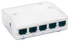

Please make sure, that the program version of the grandMA desk meets the specifications described in: Version of grandMA desk or grandMA onPC (off-line).
For communication you have to connect the VPU with the grandMA console or another PC running the grandMA2 onPC.
You can do this directly with a patch cable with two RJ-45 connectors or via a network switch.
| grandMA II Console | RJ 45 Cable or Switch | grandMA VPU/PC |
|  |
If you use a network with a switch, connect the PC with a regular patch network cable to the switch.
The application connects to the desk and receives the data of the current show. If you do not get a connection to the desk, make sure that grandMA VPU has the right IP address as described in ’IP Addresses’.